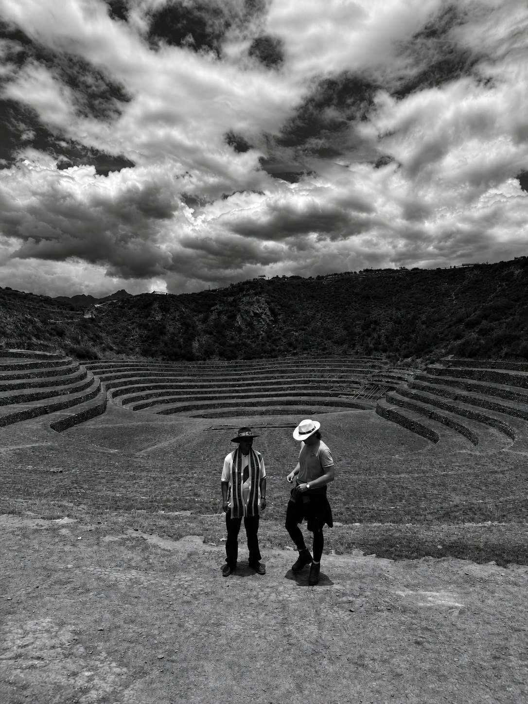
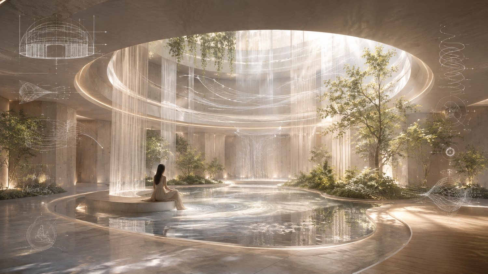
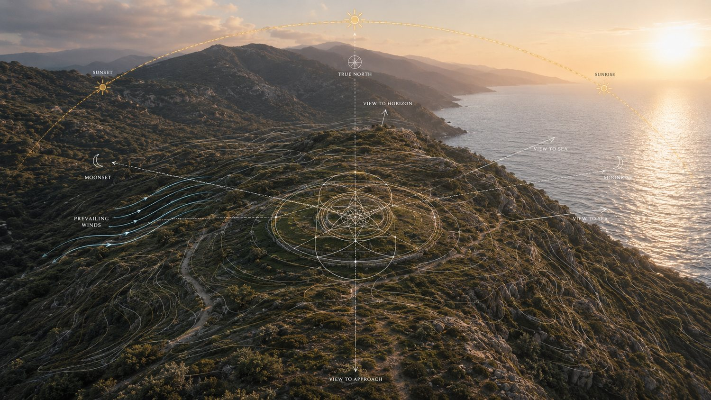
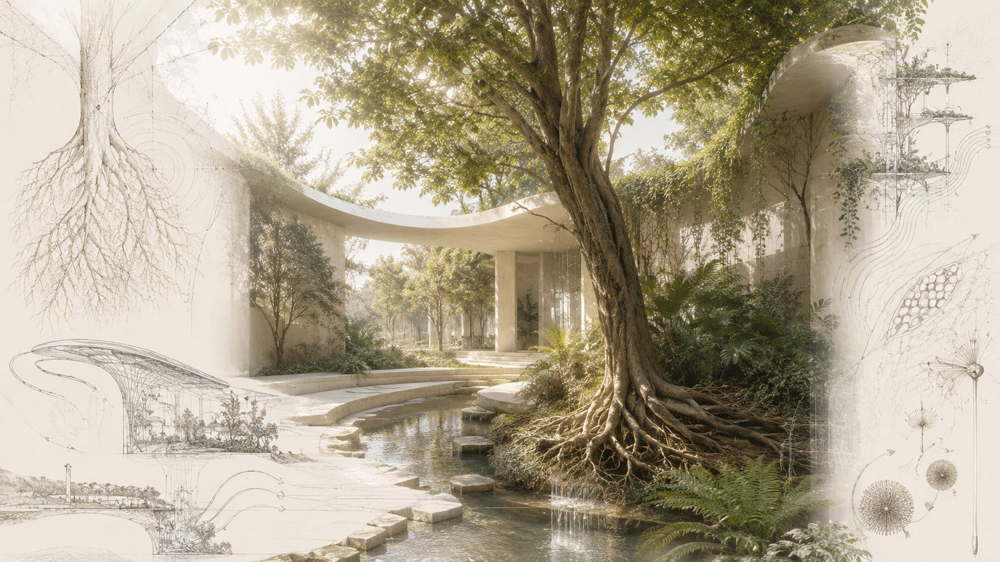
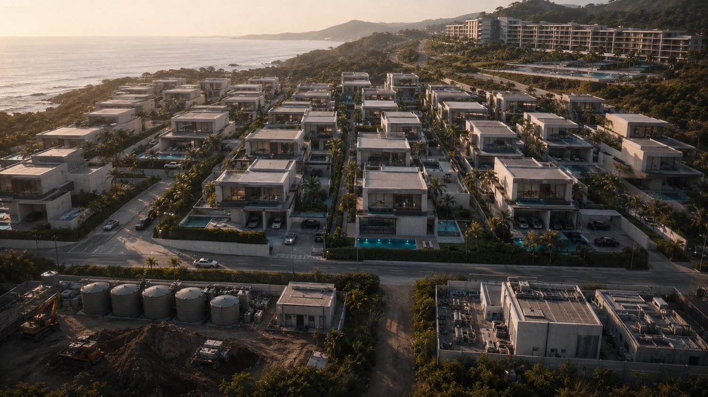
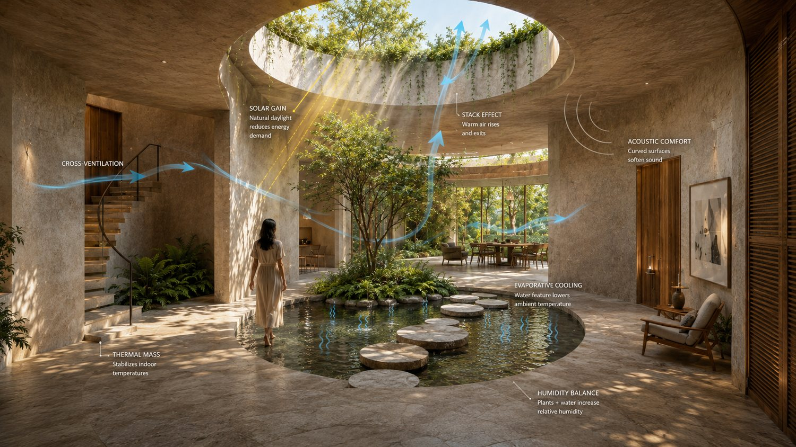
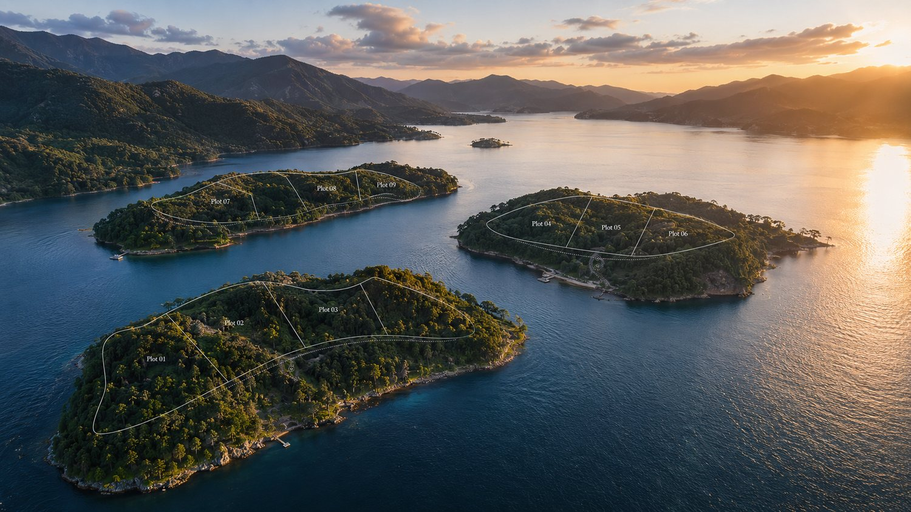
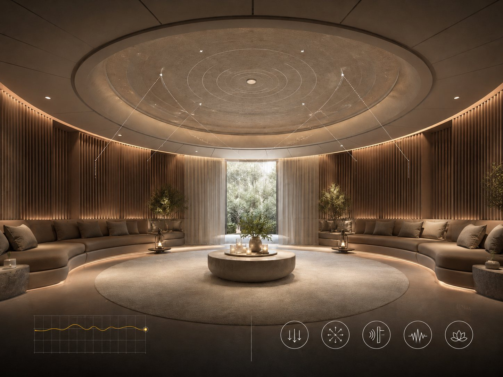

Architecture once knew more

The Founder’s journey
La Doña Santa did not begin as conventional real-estate proposition. Its foundation developed through the Founder’s movement between countries, cultures, remote landscapes, traditional communities, ceremonial environments and radically different ways of living.
He studied not only what buildings looked like, but what they produced within the people who entered them. Intuition remained subjected to reality verification — every idea required structural possibility, technical resolution, operational intelligence and highest construction execution levels.

Space is never neutral
La Doña Santa was born from an understanding that is both ancient and urgently contemporary: space is never neutral.
Light, water, sound, material, proportion, air, privacy and natural rhythm do not merely compose an atmosphere. They continuously influence how a person feels, sleeps, thinks, recovers, works, connects and lives.
A residence is therefore never only a container for life. Whether intentionally designed or not, it becomes an active force within it.

Before buildings became products
Across civilizations, architecture was once inseparable from the observation of nature.
Mathematics, astronomy, geometry, proportion, cardinal orientation, solar and lunar cycles, prevailing winds, water, terrain and material behaviour informed where important structures were placed and how they were formed.
Builders studied the movement of shadows. They observed the seasons, the sky and the behaviour of the land. Geometry was used not only to create visual order, but to establish relationships between the human being, the structure and the greater environment surrounding it.
What we now call sacred architecture was not defined by decoration alone. It emerged from the belief that a building carried consequence — that orientation, proportion, sequence and spatial rhythm could influence human perception and connect daily life with a larger order. Architecture was shelter, but it was also knowledge made inhabitable.

The biological memory of nature
Long before biophilia became a modern term, human settlements were formed around courtyards, gardens, water, natural materials, changing light, protected thresholds and direct contact with the living world.
Biophilia gave a contemporary name to an ancient biological reality: the human being is not separate from nature. The body continues to respond to daylight, airflow, temperature, vegetation, water, texture, sound, spatial refuge and the perception of safety. These relationships affect us before conscious thought begins.
For La Doña Santa, biophilia is therefore not an aesthetic category. It is not the addition of plants to an otherwise conventional interior. It is the restoration of a fundamental relationship between human biology, architecture and the natural world.

What contemporary development forgot
Modern construction brought extraordinary advances in engineering, safety, technology and performance. But as property became a globally repeatable product, architecture was increasingly divided into disconnected disciplines.
The land became an acquisition. The villa became a typology. Engineering was asked to make a predetermined form stand. Wellness was added as a room. Landscape arrived at the end. Long-term operation was considered after handover.
The sun was controlled after the form had already been fixed. Wind was answered by machinery. Water was treated primarily as drainage. Materials were selected for visible effect, often without equal consideration for tactility, ageing, acoustics or their relationship with the human body.
Residences became larger, cleaner and more spectacular — yet increasingly interchangeable. Many now contain every visible signal of wealth while remaining without internal order, natural rhythm or a meaningful relationship with the life taking place inside them.
What is expensive is not necessarily intelligent.

The necessary convergence
La Doña Santa emerged at the point where these separated forms of intelligence had to meet again.
This was never a proposal to reject modernism, technology or contemporary engineering. Nor was it an attempt to reproduce the architecture of the past. It was the recognition that the analytical precision of the present had to be reunited with older disciplines of observation, proportion, orientation, nature and human meaning.
Architecture, master planning, development, structural and civil engineering, environmental systems, construction, wellness, longevity, landscape, material science, technology, spiritual intelligence and long-term operation had to be considered as one interdependent system. Not assembled after the concept. Present from its origin.

Making the invisible legible
Before architecture is imposed upon a site, the land must be understood in layers.
Topographical surveying, geotechnical and hydrogeological investigation, ecological mapping, soil analysis, groundwater behaviour, drainage, solar-path studies, prevailing-wind analysis, microclimate modelling, acoustic conditions, privacy exposure and environmental risk are examined before the permanent geometry is resolved.
Where relevant to the location and project, this may extend to radon assessment, electromagnetic exposure baselines, water and air-quality analysis, material-health criteria and other environmental conditions that remain invisible in a conventional architectural presentation.
The measurable and the subtle are not confused, but neither is dismissed. Engineering data establishes physical truth. Energetic, ceremonial and spiritual readings — when appropriate to the client, land and cultural context — introduce another layer of understanding.
Sacred geometry is not applied as decoration. Its principles are translated into proportion, orientation, thresholds, axial relationships, circulation, compression and release, the placement of water, the movement of light and the rhythm through which the residence is experienced.
Nothing symbolic is permitted to bypass engineering. Nothing technically efficient is allowed to erase human meaning.
Engineered as a living system
The architecture is developed through coordinated structural, civil, mechanical, electrical, water, energy and environmental engineering.
Building physics, daylight and thermal simulation, airflow, acoustic performance, façade behaviour, lighting, material performance, specialist wellness technologies, digital infrastructure and security are resolved in relation to one another — not as separate technical packages competing for space inside a completed design.
Water systems, natural ventilation, environmental control, recovery environments, movement spaces and longevity technologies are integrated into the architecture from the beginning.
Every residence advances through controlled stages of due diligence, concept validation, design development, multidisciplinary technical coordination, procurement, construction, testing, commissioning and long-term operation.
The objective is not complexity for its own sake. It is coherence at a level where nothing important has been left to accident.

An institution, not a style
La Doña Santa is not a visual style, a conventional architectural studio or another luxury developer. It is being formed as an institution capable of holding the complete intelligence of a private residence across its entire life.
Architects, engineers, development strategists, construction and cost-control specialists, landscape and ecological experts, wellness and longevity professionals, technical innovators, master craftspeople and — where the project calls for it — ceremonial and spiritual masters are brought into one governed structure.
The client is not left to reconcile disconnected consultants or protect the original vision from dilution. One integrated system carries that vision from the first reading of the land to the completed residence and beyond.
Luxury is total resolution
At this level, luxury is not an abundance of expensive materials. It is the absence of unresolved decisions.
It is found in the quality of silence, the movement of air, the temperature beneath bare feet, the weight of a door, the privacy of an approach, the acoustics of a room, the reflection of water, the changing shadow of a wall and the precision with which every space supports the life taking place within it.
The design must operate beyond established luxury conventions — in spatial invention, material intelligence, craftsmanship, engineering, sensory depth and the quality of execution. It should never need to announce its cost. Its intelligence should be felt long before its value needs to be explained.
The client as patron
This degree of architecture cannot be produced through capital alone. It requires a client with vision, freedom of mind and the courage to pursue a result for which no existing reference is sufficient.
La Doña Santa brings the system, discipline, expertise and capacity to make that freedom buildable. The client brings the life around which it must be formed.
At this level, the client is no longer simply purchasing a residence. The client becomes a patron of what private architecture can become.
Together, they can create spatial languages, living systems and entirely new residential variations capable of establishing the foundations of a new modernism — one defined not by repetition, but by human intelligence, natural coherence and radical individuality.
The future of private living
The work does not end when construction is completed. A truly intelligent residence must be capable of evolving with its owner — with changing biological needs, technologies, family structures, levels of privacy, methods of recovery and ways of living across time.
This is why La Doña Santa brings architecture, development, engineering, construction, wellness and long-term residential intelligence into one continuous relationship.
In a world where almost every recognised symbol of luxury can be acquired, replicated or replaced, true rarity has moved beyond possession. For those who can access almost anything, the final luxury is authorship. The creation of a private world that did not exist before them — and could not have existed without them.
This is the responsibility La Doña Santa was created to carry.